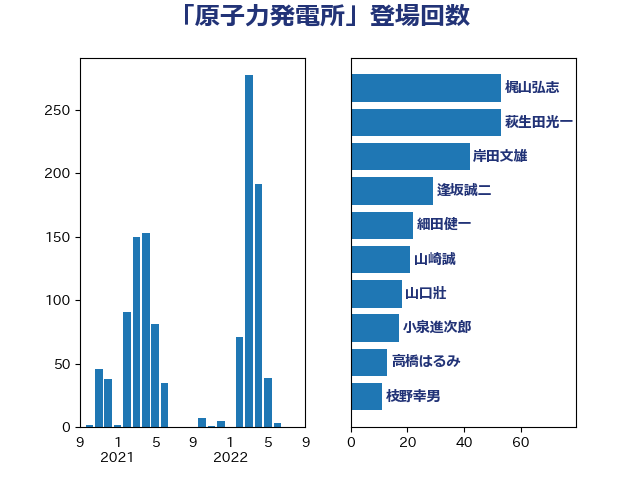

単語「原子力発電所」

| 梶山弘志 | 自由民主党 | 53 回 |
| 萩生田光一 | 自由民主党 | 53 回 |
| 岸田文雄 | 自由民主党 | 42 回 |
| 逢坂誠二 | 立憲民主党 | 29 回 |
| 細田健一 | 自由民主党 | 22 回 |
| 山崎誠 | 立憲民主党 | 21 回 |
| 山口壯 | 自由民主党 | 18 回 |
| 小泉進次郎 | 自由民主党 | 17 回 |
| 高橋はるみ | 自由民主党 | 13 回 |
| 枝野幸男 | 立憲民主党 | 11 回 |
| 神田潤一 | 自由民主党 | 11 回 |
| 井上信治 | 自由民主党 | 10 回 |
| 江島潔 | 自由民主党 | 10 回 |
| 滝波宏文 | 自由民主党 | 9 回 |
| 笠井亮 | 日本共産党 | 9 回 |
| 中島克仁 | 立憲民主党 | 8 回 |
| 林芳正 | 自由民主党 | 8 回 |
| 河野義博 | 公明党 | 8 回 |
| 小野泰輔 | 日本維新の会 | 7 回 |
| 浜田聡 | NHK党 | 7 回 |
| 空本誠喜 | 日本維新の会 | 7 回 |
| 阿部知子 | 立憲民主党 | 7 回 |
| 浅野哲 | 国民民主党 | 6 回 |
| 田村智子 | 日本共産党 | 6 回 |
| 野間健 | 立憲民主党 | 6 回 |
| 塩田博昭 | 公明党 | 5 回 |
| 平沢勝栄 | 自由民主党 | 5 回 |
| 松野博一 | 自由民主党 | 5 回 |
| 石井章 | 日本維新の会 | 5 回 |
| 西田昭二 | 自由民主党 | 5 回 |
| 西銘恒三郎 | 自由民主党 | 5 回 |
| 近藤昭一 | 立憲民主党 | 5 回 |
| 三浦信祐 | 公明党 | 4 回 |
| 田村まみ | 国民民主党 | 4 回 |
| 畦元将吾 | 自由民主党 | 4 回 |
| 石井正弘 | 自由民主党 | 4 回 |
| 福山哲郎 | 立憲民主党 | 4 回 |
| 羽田次郎 | 立憲民主党 | 4 回 |
| 荒井優 | 立憲民主党 | 4 回 |
| 野田国義 | 立憲民主党 | 4 回 |
| 青木愛 | 立憲民主党 | 4 回 |
| 音喜多駿 | 日本維新の会 | 4 回 |
| 三木亨 | 自由民主党 | 3 回 |
| 下村博文 | 自由民主党 | 3 回 |
| 井林辰憲 | 自由民主党 | 3 回 |
| 吉田とも代 | 日本維新の会 | 3 回 |
| 和田義明 | 自由民主党 | 3 回 |
| 大岡敏孝 | 自由民主党 | 3 回 |
| 太田房江 | 自由民主党 | 3 回 |
| 室井邦彦 | 日本維新の会 | 3 回 |
| 岩本剛人 | 自由民主党 | 3 回 |
| 末松信介 | 自由民主党 | 3 回 |
| 横山信一 | 公明党 | 3 回 |
| 渡辺博道 | 自由民主党 | 3 回 |
| 玉木雄一郎 | 国民民主党 | 3 回 |
| 磯崎仁彦 | 自由民主党 | 3 回 |
| 笹川博義 | 自由民主党 | 3 回 |
| 菊田真紀子 | 立憲民主党 | 3 回 |
| 蓮舫 | 立憲民主党 | 3 回 |
| 北村経夫 | 自由民主党 | 2 回 |
| 古賀之士 | 立憲民主党 | 2 回 |
| 吉田宣弘 | 公明党 | 2 回 |
| 大塚耕平 | 国民民主党 | 2 回 |
| 大島敦 | 立憲民主党 | 2 回 |
| 宮口治子 | 立憲民主党 | 2 回 |
| 小林鷹之 | 自由民主党 | 2 回 |
| 小沼巧 | 立憲民主党 | 2 回 |
| 小熊慎司 | 立憲民主党 | 2 回 |
| 山田美樹 | 自由民主党 | 2 回 |
| 岩渕友 | 日本共産党 | 2 回 |
| 岩田和親 | 自由民主党 | 2 回 |
| 平山佐知子 | 無所属 | 2 回 |
| 平林晃 | 公明党 | 2 回 |
| 杉本和巳 | 日本維新の会 | 2 回 |
| 柴田巧 | 日本維新の会 | 2 回 |
| 根本匠 | 自由民主党 | 2 回 |
| 森山浩行 | 立憲民主党 | 2 回 |
| 泉田裕彦 | 自由民主党 | 2 回 |
| 菅家一郎 | 自由民主党 | 2 回 |
| 菅直人 | 立憲民主党 | 2 回 |
| 藤巻健太 | 日本維新の会 | 2 回 |
| 西田昌司 | 自由民主党 | 2 回 |
| 野村哲郎 | 自由民主党 | 2 回 |
| 金子俊平 | 自由民主党 | 2 回 |
| 長坂康正 | 自由民主党 | 2 回 |
| 青山大人 | 立憲民主党 | 2 回 |
| 馬場雄基 | 立憲民主党 | 2 回 |
| 高木かおり | 日本維新の会 | 2 回 |
| ながえ孝子 | 無所属 | 1 回 |
| 上杉謙太郎 | 自由民主党 | 1 回 |
| 中曽根康隆 | 自由民主党 | 1 回 |
| 中野洋昌 | 公明党 | 1 回 |
| 佐藤茂樹 | 公明党 | 1 回 |
| 加田裕之 | 自由民主党 | 1 回 |
| 勝俣孝明 | 自由民主党 | 1 回 |
| 勝部賢志 | 立憲民主党 | 1 回 |
| 國重徹 | 公明党 | 1 回 |
| 城井崇 | 立憲民主党 | 1 回 |
| 堀内詔子 | 自由民主党 | 1 回 |
| 堀場幸子 | 日本維新の会 | 1 回 |
| 塩川鉄也 | 日本共産党 | 1 回 |
| 宮本周司 | 自由民主党 | 1 回 |
| 小沢雅仁 | 立憲民主党 | 1 回 |
| 小里泰弘 | 自由民主党 | 1 回 |
| 尾身朝子 | 自由民主党 | 1 回 |
| 山谷えり子 | 自由民主党 | 1 回 |
| 岸信夫 | 自由民主党 | 1 回 |
| 川田龍平 | 立憲民主党 | 1 回 |
| 庄子賢一 | 公明党 | 1 回 |
| 後藤茂之 | 自由民主党 | 1 回 |
| 徳永エリ | 立憲民主党 | 1 回 |
| 掘井健智 | 日本維新の会 | 1 回 |
| 斉藤鉄夫 | 公明党 | 1 回 |
| 新妻秀規 | 公明党 | 1 回 |
| 早坂敦 | 日本維新の会 | 1 回 |
| 有村治子 | 自由民主党 | 1 回 |
| 木原誠二 | 自由民主党 | 1 回 |
| 本田太郎 | 自由民主党 | 1 回 |
| 杉田水脈 | 自由民主党 | 1 回 |
| 東徹 | 日本維新の会 | 1 回 |
| 森まさこ | 自由民主党 | 1 回 |
| 森本真治 | 立憲民主党 | 1 回 |
| 横沢高徳 | 立憲民主党 | 1 回 |
| 櫻井周 | 立憲民主党 | 1 回 |
| 津島淳 | 自由民主党 | 1 回 |
| 浅田均 | 日本維新の会 | 1 回 |
| 浦野靖人 | 日本維新の会 | 1 回 |
| 清水真人 | 自由民主党 | 1 回 |
| 渡辺創 | 立憲民主党 | 1 回 |
| 片山大介 | 日本維新の会 | 1 回 |
| 猪口邦子 | 自由民主党 | 1 回 |
| 玄葉光一郎 | 立憲民主党 | 1 回 |
| 田名部匡代 | 立憲民主党 | 1 回 |
| 田島麻衣子 | 立憲民主党 | 1 回 |
| 田村貴昭 | 日本共産党 | 1 回 |
| 石川大我 | 立憲民主党 | 1 回 |
| 神谷裕 | 立憲民主党 | 1 回 |
| 福島伸享 | 無所属 | 1 回 |
| 福田昭夫 | 立憲民主党 | 1 回 |
| 竹内真二 | 公明党 | 1 回 |
| 緑川貴士 | 立憲民主党 | 1 回 |
| 赤澤亮正 | 自由民主党 | 1 回 |
| 赤羽一嘉 | 公明党 | 1 回 |
| 近藤和也 | 立憲民主党 | 1 回 |
| 金子恵美 | 立憲民主党 | 1 回 |
| 鈴木憲和 | 自由民主党 | 1 回 |
| 鈴木敦 | 国民民主党 | 1 回 |
| 鈴木淳司 | 自由民主党 | 1 回 |
| 長友慎治 | 国民民主党 | 1 回 |
| 関芳弘 | 自由民主党 | 1 回 |
| 阿達雅志 | 自由民主党 | 1 回 |
| 高村正大 | 自由民主党 | 1 回 |
| 高橋千鶴子 | 日本共産党 | 1 回 |